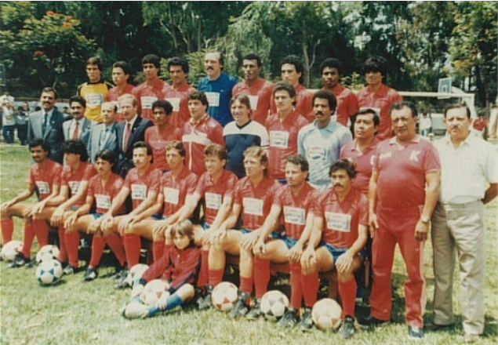
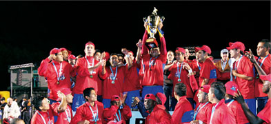
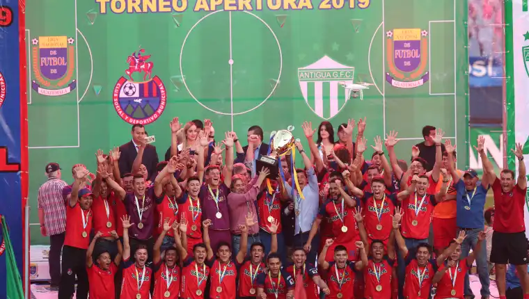
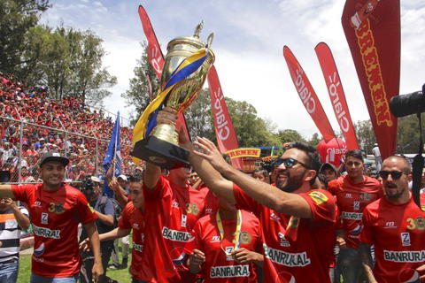
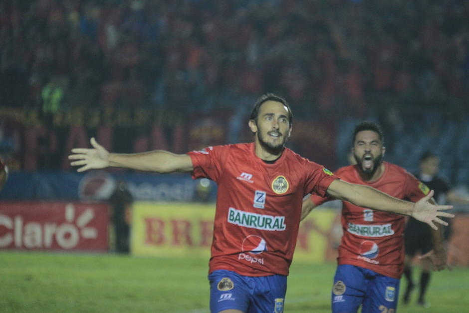

Historia del "equipo del pueblo"
Fundacion
El Club Social y Deportivo
Municipal, conocido comúnmente como Club Municipal,
es un equipo de fútbol de la Ciudad de Guatemala. Fue fundado el 17 de mayo de 1936.
Actualmente compite en la Liga Nacional y juega sus partidos de local en el Estadio El Trébol.
Los colores que identifican al Club son el rojo y el azul, utilizados desde poco después de su fundación.
1936 – 1949
El Club Municipal de Guatemala fue fundado en 1936 y jugó en la Segunda División durante
los primeros dos años, logrando el bicampeonato. En 1938, obtuvo el ascenso a la Primera
División de la Liga Capitalina. Ese mismo año, el club fue subcampeón detrás de Tipografía
Nacional.
Los primeros títulos
oficiales del club fueron los torneos de Copa Guatemala ganados en 1940 y 1941. En
la temporada 1942, Municipal obtuvo su primer título de Liga bajo la dirección técnica
de Manuel Felipe Carrera, quien también llevó al club a otro título de Liga en 1947.
Entre 1948 y 1950, no hubo
torneos oficiales debido a la preparación de la Selección Nacional de Guatemala para los
VI Juegos Centroamericanos y del Caribe. Durante ese período, Municipal participó en varios
torneos internacionales, enfrentando a equipos reconocidos como América y Chivas de México,
y Juventud Asturiana de Cuba, entre otros.
Durante este tiempo,
jugadores como Carlos "Pepino" Toledo, Jorge Guadalupe Portillo, Blastimil "Checo"
Bouza, Alfonso "Tarzán" Segura de El Salvador, Guillermo "Mito" Marroquín, Esteban
"Neco" González, Efraín "EL Soldado" De León, Carlos Reiche, Cristobal "Chino" Bolaños,
Julio "Belice" Rojas, Oscar "Coca" García, Federico "Chapuda" Morales, Antonio Obregón,
Miguel "Miguelito" Fernández y Mario "Gusano" Melgar tuvieron una participación importante.
1950 – 1960
En la temporada 1950-1951, bajo la dirección
del argentino Alberto "Che" Cevasco, Municipal logró su primer bicampeonato. En 1951 no hubo torneo
y en la temporada 1952-1953, Cevasco terminó en el séptimo lugar y fue destituido. Manuel Felipe Carrera
regresó como entrenador y en la temporada 1954-1955 logró el cuarto título de campeón de liga para
el equipo. Carrera se retiró de la dirección técnica después de estar vinculado al club durante aproximadamente
20 años desde su fundación.
Este período concluyó con Carlos
"Pepino" Toledo, destacado goleador, como director técnico. Obtuvo el subcampeonato en las
temporadas 1957-1958 y 1959-1960. En 1960, el equipo ganó la VIII Copa Guatemala, siendo la
tercera copa en la historia del club.
Entre los jugadores que formaron parte de este
equipo durante varias temporadas se encuentran Alfonso Vetorazzi, Walter "Manía" Villatoro, Hugo "Tin Tan"
Peña, Oscar "Palín" Estrada, Rubén Aqueche, Rafael "Mico" Veliz, Julio "Chino" Calderón, César Rodríguez,
Esteban Cuyún, Armando "Maestro" Durán, Eduardo "Caballo" Torres, Esteban "Mudo" González, Enrique Rivas y
Ramón "Moncho" Rodríguez.
1961 – 1970
Durante los años 1961 y 1962, el equipo Municipal dirigido por Walter "Manía" Villatoro y luego Lorenzo
Ausina Tur no obtuvo títulos. Sin embargo, en la temporada 1963-1964, el entrenador argentino Luis Grill
Prieto condujo al equipo a su quinto título de la Liga. Grill Prieto logró un subcampeonato en 1964 y
fue reemplazado por Marvin Rodríguez, jugador costarricense y exmiembro del club, quien consiguió el
sexto título de campeón de clubes en la temporada 1965. Luego, Carlos "Pepino" Toledo asumió como entrenador
a finales de 1966 y bajo su dirección, el equipo ganó la Copa Presidencial en 1967, obteniendo su
cuarto título de copa. Destaca el impacto de "Pepino" en la historia del club tanto como jugador,
anotando goles y ganando títulos, como también como entrenador campeón.
En 1969, bajo la dirección de César Viccino, Municipal ganó el torneo de Copa Federaciones, consiguiendo
así su quinta copa. En 1970, con Luis Grill Prieto nuevamente como entrenador, el club alcanzó su séptimo
título de liga, dejando una página importante en la historia del club argentino con dos títulos de liga
y uno de copa. En los años 90, Don Neto Villa trajo de regreso a Luis para encargarse de las fuerzas
básicas del club.
Algunos jugadores destacados durante esta década
incluyen a Rolando Valdez, Ignacio "Nacho" González, Alberto López Oliva, Ricardo Clark, Marvin Rodríguez
(costarricense), Armando Melgar, Daniel Salamanca, Hugo Montoya, Alberto López Sánchez, Rafael "Cochita" Godoy,
Hugo Filippi, Jorge Losley, Rolando Moreno Calvo (costarricense), Miguel Angel "Nelo" López y Francisco "Chico"
González.
1971 – 1977
Durante el período de 1971 a 1975, el Club Municipal, bajo la dirección del entrenador uruguayo Rubén Amorín,
logró grandes éxitos. Ganaron el octavo título de liga en 1973 y lograron un bicampeonato en 1974. En ese mismo
año, Amorín llevó al equipo a ganar la IV Copa de Fraternidad Centroamericana y posteriormente el título de Campeón
de Concacaf, convirtiéndose en el único equipo guatemalteco en lograrlo. También tuvieron la oportunidad de jugar
la Copa Interamericana contra Independiente de Argentina, pero fueron derrotados en la definición de penales.
Este período exitoso se completó con el décimo título de
campeón de liga en 1976, bajo la dirección del argentino Salvador Pericullo. Además, ganaron la VII Copa
Fraternidad Centroamericana en 1977, obteniendo así su segundo título regional.
Entre los jugadores destacados de este período se encuentran
Julio César "Morocho" Anderson, Leonardo McNish, Benjamín "Mincho" Monterroso, Miguel Angel Cobián (argentino),
Alberto López Oliva, Emilio Mitrovich (argentino), Miguel Angel Pérez, Felipe Antonio Carías, Lijón León De León,
Rivahi Girón, Armando Melgar, José Manuel Argueta, Adrián "Chito" Fernández, Juan Bautista Rozzotto y Raúl
Washington Benítez (uruguayo).
1978 – 1985
Después de la temporada 1977-1978, en la que
obtuvieron el subcampeonato, el equipo experimentó una grave crisis tanto en lo administrativo como en lo
deportivo. Durante este período, el equipo fue dirigido por 11 entrenadores diferentes, algunos de los
cuales habían tenido éxitos anteriores con el club. Sin embargo, el equipo Municipal se encontraba en
una posición mediocre en la tabla de posiciones e incluso participó en varias liguillas de descenso,
lo que marcó la etapa más oscura de su historia.
En ese difícil período, varios jugadores se
mantuvieron en el equipo durante varias temporadas, entre ellos Rogelio "Loco" Flores, Erwin Donis,
Raúl Galdámez, Julio Sical, Jorge Luis Gramajo, Max Girón, Luis "Gato" Morales, Marco Tulio Barillas,
Miguel "Mike" Hernández, Carlos Pérez McNish, Miguel Angel Juárez, Miguel Angel Pérez, Miguel Angel Cruz,
Elman Rodas y Vicente Fernández.
| aaaaaaaaa |
aaaaaaaaaaaa |
 |
1986 – 1999
En mayo de 1986, Ernesto Villa Alfonso se
convierte en el presidente del Club Municipal de Guatemala y comienza un proceso de reconstrucción.
Bajo la dirección del entrenador chileno Rolando Torino Flores, el equipo logra el quinto lugar en
el torneo, lo que marca un regreso prometedor. A partir de 1987 hasta 1990, Municipal se convierte
en el equipo más dominante de la liga guatemalteca, logrando el primer tricampeonato en la historia
del fútbol guatemalteco. Los entrenadores argentinos Miguel Ángel Brindisi y Walter Ormeño lideran
al equipo a los títulos en las temporadas 1987, 1988 y 1989-1990. Estos logros aumentan la popularidad
y el apoyo de la afición hacia Municipal.
En la década de los noventa, el equipo gana
su tercer título de liga en la temporada 1991-1992 bajo la dirección de Rubén Amorín. Aunque estuvieron
cerca de conseguir un cuarto campeonato consecutivo, pierden en una final disputada contra Comunicaciones.
Durante este período, Amorín también logra cinco títulos de liga en total, así como dos títulos
internacionales: la IV Copa Fraternidad Centroamericana y el Campeonato de Concacaf.
A partir de la temporada 1992-1993, Horacio Cordero,
entrenador argentino, toma las riendas del equipo durante cuatro temporadas. Aunque solo consigue un
título de liga, el décimo quinto en la historia del club, logra dos campeonatos consecutivos de la Copa
Guatemala en 1994 y 1995. Además, Municipal participa en dos cuadrangulares del Torneo de Campeones de
Concacaf, obteniendo el tercer lugar en 1993 y el subcampeonato en 1995.
Después de la partida de Cordero en 1996, Municipal
pasa por varios entrenadores en los años siguientes, como Marvin Rodríguez, Benjamín Monterroso, Jan Postulka
y Flavio Ortega. Durante este período, el equipo no logra ganar títulos de liga, excepto la Copa Aqua en 1998
y un subcampeonato en la temporada 1998-1999 bajo la dirección de Ortega. Ernesto Villa Alfonso deja la
presidencia de la Junta Directiva tras rescatar al equipo de una crisis y obtener varios éxitos, incluyendo
cinco títulos de liga, tres títulos de copa y dos subcampeonatos en el Torneo Campeón de Concacaf.
Durante este período exitoso, varios jugadores
destacados hacen historia en el club, como Geovany Hernández, Marcelo Bauza (argentino), Julio Rodas,
Juan Carlos Plata, Juan Manuel "Memín" Funes, Ronald "La Bala" Gómez (costarricense), Ademar Benítez
(uruguayo) y otros. Además, se implementa un programa de fuerzas básicas que brinda buenos resultados
para el club en los años siguientes.
2000 – 2009
Durante esta etapa dorada, Municipal se convirtió en
el club más exitoso de Guatemala y uno de los principales de Centroamérica. Bajo la dirección de los entrenadores
Horacio Cordero, Ever Hugo Almeida y Enzo Trosero, el equipo logró múltiples títulos de liga y otros
campeonatos importantes.
Con el retorno de Horacio Cordero en el año 2000,
Municipal ganó dos títulos consecutivos de liga, poniendo fin a una sequía de seis años. Posteriormente,
bajo la presidencia de Gerardo Villa, llegó Ever Hugo Almeida, quien obtuvo seis títulos en un período
de seis torneos, incluyendo un bicampeonato de liga y títulos internacionales como el de la Uncaf.
Después de la salida de Almeida, Enzo Trosero se convirtió
en el entrenador y llevó a Municipal a ganar cinco títulos consecutivos de liga, logrando un pentacampeonato.
Además, el equipo ganó el título de la Uncaf en 2004.
En 2008, Horacio Cordero regresó por tercera vez y
obtuvo otro título de liga. En el torneo Apertura 2009, Jorge Habegger, también argentino, asumió como
entrenador y ganó otro título para el equipo.
En esta época de éxito, Municipal alcanzó un
total de 12 títulos de liga, 2 títulos de campeón de copa y 2 copas de la Uncaf. El equipo logró al
menos un título en 9 de los 10 años, consolidando su dominio en el fútbol guatemalteco.
Varios jugadores destacados formaron parte del
equipo durante esta década exitosa, incluyendo a Juan Carlos Plata, Carlos Ruiz, Guillermo Ramírez, Julio
Girón, y muchos otros.
2010 – 2019
Durante este período, Municipal tuvo muchas apariciones
en finales, pero logró ganar solo 4 de las 13 en las que participó. A pesar de contar con técnicos reconocidos,
como Manolo Keosseian, Javier Delgado, Gustavo Machaín y Sebastián Bini, el equipo sufrió derrotas en finales,
incluso perdiendo algunas en tiros de penal.
Los títulos obtenidos fueron en el Clausura 2010 con Manolo
Keosseian, Apertura 2011 con Javier Delgado, Clausura 2017 con Gustavo Machaín y Apertura 2019 con Sebastián Bini.
A lo largo de este período, Municipal tuvo varios entrenadores, incluyendo a Enzo Trossero y Ever Hugo Almeida,
pero no lograron ganar finales.
A pesar de las derrotas en finales, Municipal sigue siendo
el club más exitoso de Guatemala, habiendo obtenido 31 títulos de liga hasta el Apertura 2019.
En cuanto a los jugadores, participaron en varias finales durante este período futbolistas como Cristian Noriega,
Marco Pablo Pappa, Jaime Penedo, Carlos Ruiz, Blas Pérez, entre otros.
|  |
aaaa |
 |
|
|
|  |
aaaa |
 |